How CAPTOR works
Naming image regions by counting words in captions, with no text encoder and no training. A step-by-step walkthrough on real data.
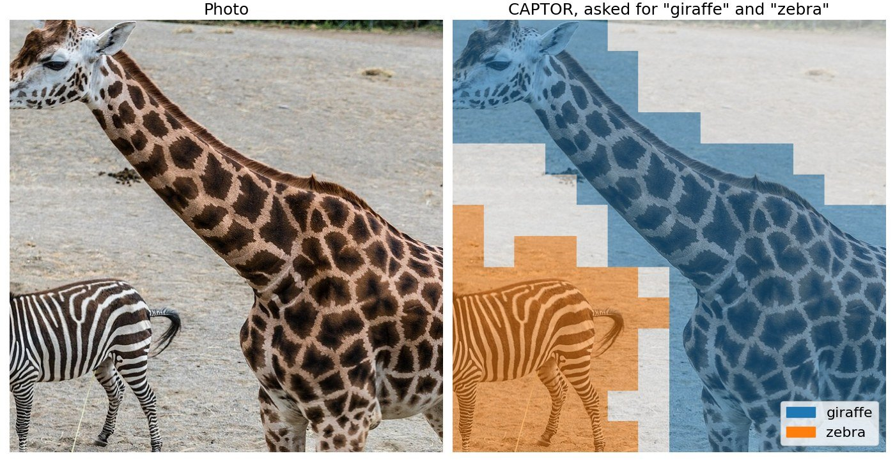
The idea in one paragraph
To point at a word in an image, a model needs a score for every word at every patch of the image. Vision-language models such as CLIP get it from a text encoder, a network trained on hundreds of millions of image and caption pairs. Many strong image encoders have no text encoder, and pathology models trained on tissue alone are a common example. CAPTOR skips the text encoder. It counts which kinds of image patches tend to appear when a caption mentions a word, and turns those counts into a small table. Reading the table gives the score of every word at every patch.
The object we need
Every grounding method needs the same object, a table of scores with one row per word and one column per image patch. Call it \(A\). The entry \(A_{tp}\) says how well term \(t\) fits patch \(p\), and the label of a patch is the term with the highest score in its column.
A model such as CLIP fills \(A\) with a dot product. A text encoder \(g\) turns the term into a vector, the image side \(h\) gives a vector for the patch, and \(A\) is how well the two agree.
$$A_{tp} = \bigl\langle g(t),\, h(x_p) \bigr\rangle$$CAPTOR fills the same table without \(g\). It writes \(A\) as a product of two smaller factors.
$$A = S\,\Phi$$\(S\) is a table of terms against visual words, counted once from captions. \(\Phi\) records which visual word each patch of the image belongs to. The rest of this page builds the two factors one step at a time, with the released COCO table and a photo of a giraffe and a zebra.
Step 1. Cut the image into patches
A vision transformer such as DINOv2 reads an image as a grid of small squares. At 196 pixels it sees a 14 by 14 grid, so 196 patches. For each patch \(p\) it outputs an embedding \(x_p\), a list of 768 numbers that describes what the patch looks like. Each embedding is scaled to length one, and the encoder stays frozen. CAPTOR never changes a single weight in it.
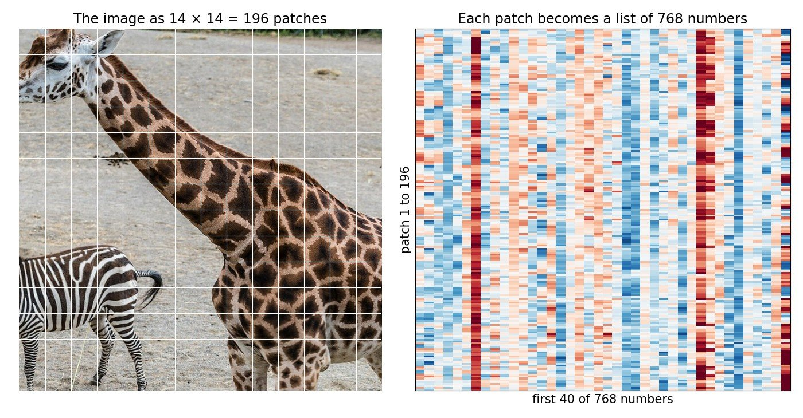
Step 2. Turn patches into visual words
Text is easy to count because it comes in words. Embeddings are continuous, so we make words out of them. We run \(k\)-means over the patch embeddings of all the captioned images, here 15,000 COCO photos. The \(K = 640\) cluster centres \(c_1, \dots, c_K\) are the visual words, and each patch belongs to its nearest word.
$$w(p) = \arg\min_{k}\; \lVert x_p - c_k \rVert$$The words are fitted once and then frozen, so a word means the same thing in every image. That is the key property. Zebra stripes in one photo and zebra stripes in a completely different photo land in the same word.
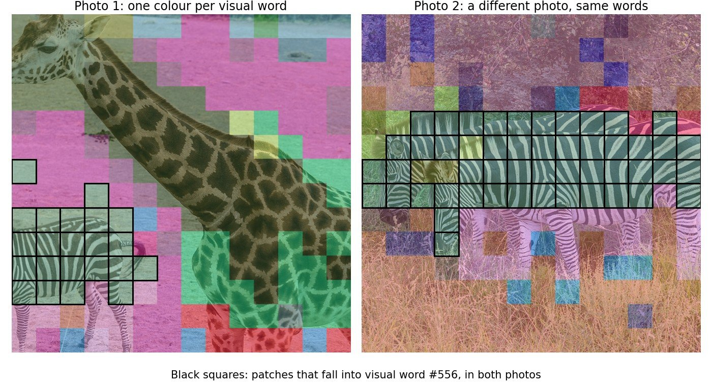
Nobody named these words. They are just clusters. Still, the patches inside a word usually turn out to be one recognisable kind of thing.
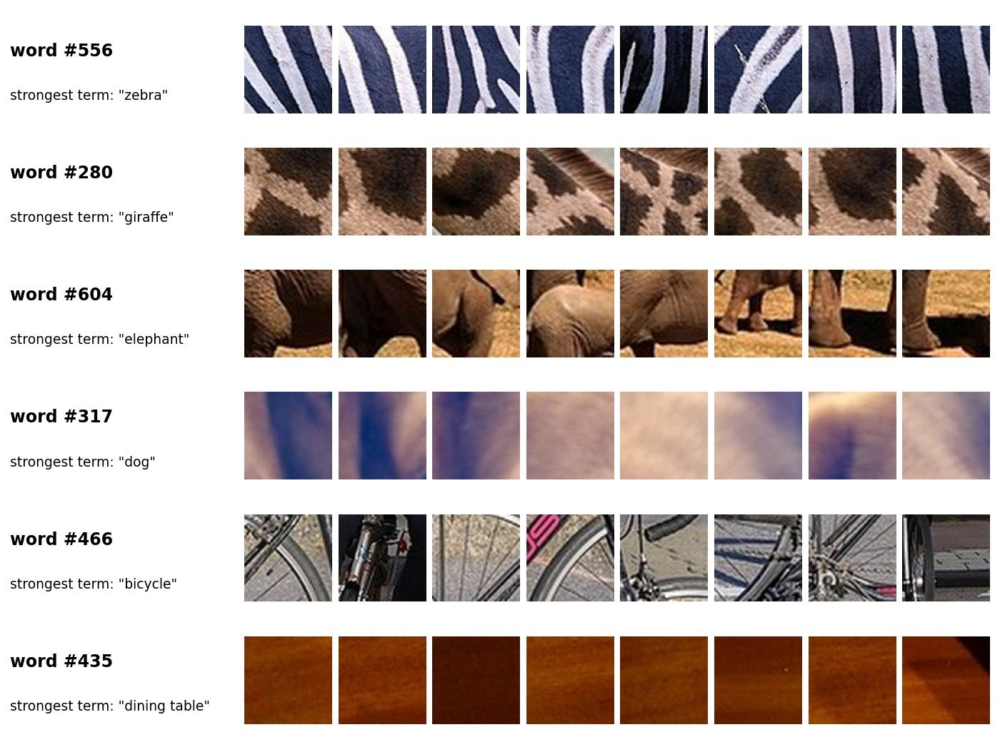
Step 3. Describe each image by its word shares
An image can now be summarised like a document, by how often each word occurs. For image \(i\), the profile \(v^{(i)}\) holds the share of its patches that fall into each word.
$$v^{(i)}_k = \frac{1}{P}\,\bigl|\{\,p : w(p) = k\,\}\bigr|, \qquad \sum_k v^{(i)}_k = 1$$\(P\) is the number of patches, 196 here. The profile records how much of the image each word covers, not where.
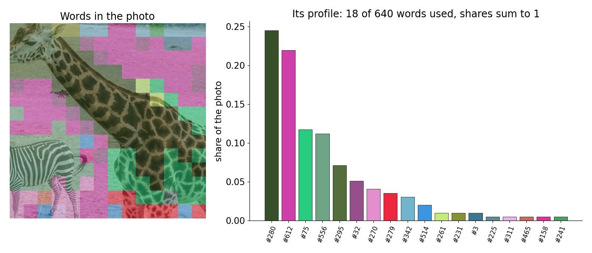
Step 4. Count a signature for every term
This is where the captions come in, and the only way they come in. For a term \(t\) such as "zebra", split the 15,000 captioned photos into two groups. \(M_t\) holds the photos whose caption mentions "zebra", 257 of them, and the rest do not mention it. For every visual word, compare its average share in the two groups.
$$s_t[k] = \frac{\operatorname{mean}_{i \in M_t} v^{(i)}_k \;-\; \operatorname{mean}_{i \notin M_t} v^{(i)}_k}{\delta_k}$$\(\delta_k\) is the standard deviation of word \(k\) across all the photos, so every word is measured in its own natural units. If zebra photos contain much more of word #556 than other photos do, \(s_{\text{zebra}}[556]\) is large. The list \(s_t\) over all 640 words is the signature of the term, and it becomes row \(t\) of the table \(S\).
Notice what is missing. The caption is never read by a neural network. It only decides which group a photo belongs to, through a plain string match, and all the meaning comes from the images themselves.
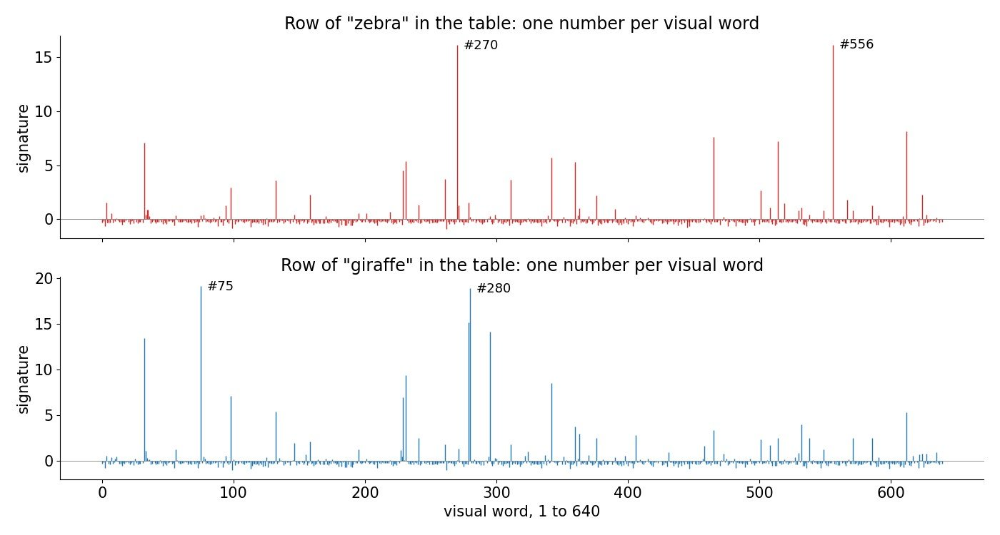
The signature also picks up context. "Zebra" scores high on word #612, which in these photos is dry, sandy ground. Zebras are usually photographed on such ground, and counting notices that.
Step 5. Put every term on the same scale
There is a trap. To label a patch we compare the scores of different terms, so the scores must be comparable, and raw signatures are not. A rare term gets large numbers by chance alone, because its group \(M_t\) is small and small groups are noisy. In fact a signature can never exceed a ceiling set only by how often the term is mentioned. With \(\pi_t\) the fraction of captions that name \(t\),
$$|s_t[k]| \;\le\; \bigl(\pi_t (1 - \pi_t)\bigr)^{-1/2}$$The ceiling is 2 for a term in half the captions and grows without limit for rare terms. Left alone, rare terms would win patches simply for being rare.
The fix is a shuffle test. We shuffle the captions among the photos, which keeps the number of mentions but destroys any real link to the images, and recompute the signature. We repeat this 200 times and record how large the strongest signature gets by chance. Its 95th percentile is the null of the term, \(\sigma_t\), and every signature is divided by its own null.
$$\sigma_t = \mathrm{P}_{95}\Bigl\{\max_k \bigl|s^{(b)}_t[k]\bigr|\Bigr\}_{b=1}^{200}, \qquad \tilde{s}_t[k] = \frac{s_t[k]}{\sigma_t}$$A score now reads as "how many times stronger than chance", for every term alike.
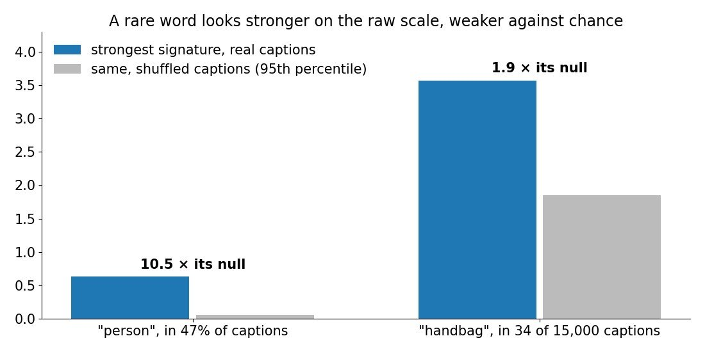
This single division changes no term's ranking of patches, since it only divides by a positive number. It changes how terms compare with each other, and on COCO it raises the overlap score from 0.429 to 0.511 mIoU. In pathology every tissue term is common, the nulls are already close, and the division is left off.
Step 6. Label a new image by looking up the table
All the work so far happens once. A new image needs a single pass through the frozen encoder. Each patch is assigned to its nearest visual word, exactly as in Step 2, which gives the image factor \(\Phi\).
$$\Phi_{kp} = \begin{cases} 1 & \text{if } w(p) = k \\ 0 & \text{otherwise} \end{cases} \qquad\Longrightarrow\qquad A_{tp} = S_{t,\,w(p)}$$In words, the score of term \(t\) at patch \(p\) is one number read from the table, the entry of \(t\) at the word of \(p\). To label the patch, read the row of every listed term and keep the highest.
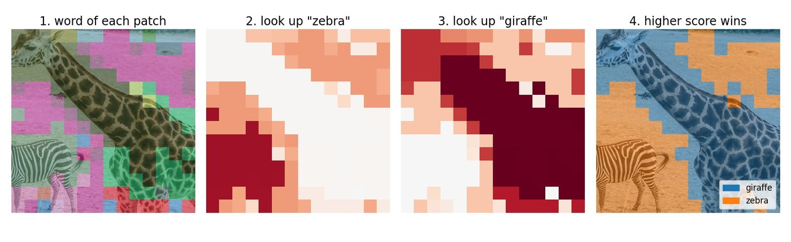
The same table also scores a whole image, which is how images are ranked for a word. The image profile is compared with the signature after each word is standardised with the corpus mean \(\mu_k\) and spread \(\delta_k\).
$$\text{score}(v, t) = \sum_{k=1}^{K} s_t[k]\, \frac{v_k - \mu_k}{\delta_k}$$Step 7. Three refinements that keep the same form
The plain lookup is coarse. Two patches in the same word always get the same score, and a patch near the edge of two words can fall on the wrong side. Three refinements address this. Each changes only the image factor, so the scores keep the form \(A = S\Psi\), with \(\Psi\) computed from the image alone.
- Soft assignment. A patch shares its weight among its \(m = 16\) nearest words, more for closer ones, and its score is the weighted average of their signatures.
- Several vocabularies and joint words. \(k\)-means started from different seeds draws different word boundaries. We fit four vocabularies and also count each combination of four words, a joint word. A joint word seen in few photos is trusted less, with weight \(\gamma = n/(n+3)\) for a joint word seen in \(n\) photos.
- Smoothing along similar patches. Patches of one object usually look alike, wherever they sit in the image. Each patch's scores are averaged with those of the patches that resemble it, using the encoder's own similarities. Only patches clearly more similar than average count, at a threshold of 1.2 times the image average.
Here \(N_m(p)\) is the set of the \(m\) nearest words of patch \(p\), \(\beta = 10\) sets how sharply the weight concentrates on the nearest word, and \(W\) holds the smoothing weights between patches.
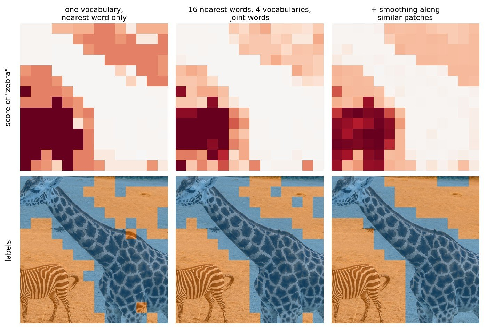
On COCO, one more correction helps. A caption such as "a dog holding a frisbee" credits "frisbee" with the patches of the dog too. A second counting round lets each patch count mostly toward the named term that already fits it best. It still uses only counting and the captions.
Why the factorization pays off
Because \(A = S\Psi\), the image and the words never need to meet inside a network. An image is encoded once, whatever you later ask about it. A new term is one more row of \(S\), counted from captions in one pass, with no retraining. The table for 78 COCO terms is 67 MB, and the pathology table is 1 MB. Since only image embeddings and captions are needed, the same recipe works for any image encoder, including encoders that never saw a word of text.
What it looks like
You list the objects you expect in a photo, and CAPTOR names every patch with one of them. Patches where no listed word scores well, such as sky, water or road, are faded.
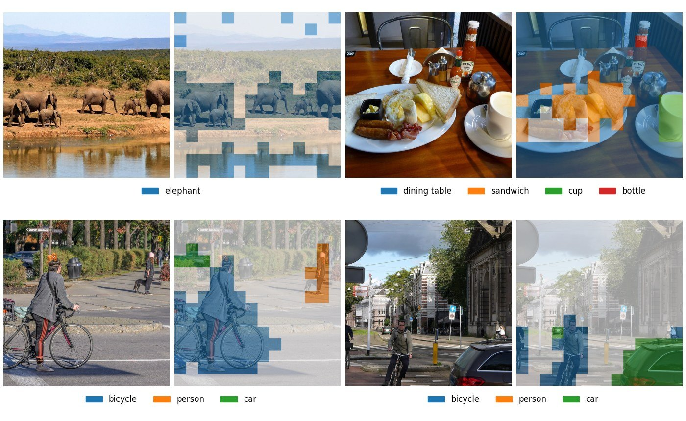
Behind the labels is a score map for each word, how strongly the word matches every patch. On its own, the map already outlines the object, across very different kinds of things.
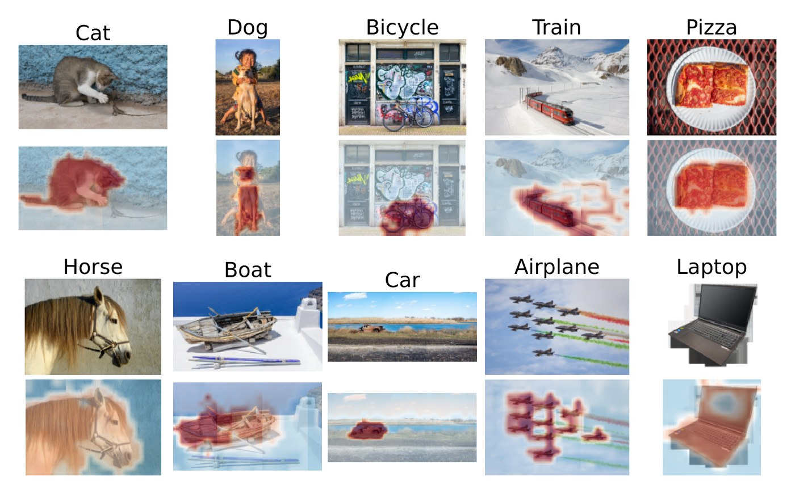
Results
Results are mean intersection over union (mIoU), the standard overlap score between predicted and true regions, where 1.0 is perfect.
| Setting | CAPTOR | Strongest baseline |
|---|---|---|
| Everyday photos, COCO, 78 object classes | 0.565 | 0.502 (ProxyCLIP) |
| Breast cancer tissue, held-out patients, CONCH image encoder | 0.497 | 0.337 (SCLIP on the CONCH text encoder) |
| Breast cancer tissue, UNI, an encoder with no text tower | 0.456 | 0.324 (the CONCH text encoder) |
On everyday photos, CAPTOR leads every training-free method compared, on COCO, Pascal VOC and Cityscapes. It is also level with a text alignment trained on the same image backbone, which needs gradients, a text encoder and several times as many captions. UNI was trained on tissue images alone, so no other method in the study can query it with words. Read through CAPTOR and given only captions, it names breast cancer tissue better than a text encoder built for pathology.
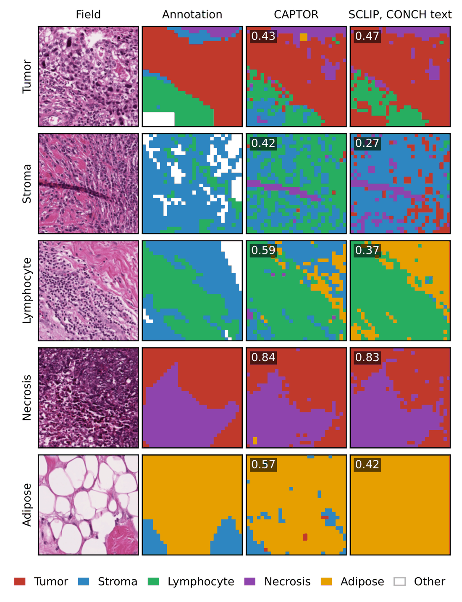
Cost
CAPTOR saves on the word side. Making a new term searchable costs about 30 times less compute than a pass through the CLIP text encoder, and building a whole table takes seconds with no gradient training.
A standard text-image cross-attention layer scores every patch against the query, turns the scores into weights with a softmax, and pools the image with those weights.
$$a_p = \frac{\exp\bigl(\langle g(t),\, h(x_p) \rangle / \sqrt{d}\bigr)}{\sum_{p'} \exp\bigl(\langle g(t),\, h(x_{p'}) \rangle / \sqrt{d}\bigr)}, \qquad o = \sum_p a_p\, h(x_p)$$The scores inside the softmax are the table \(A\). A standard layer needs the text encoder \(g\) to produce them. CAPTOR produces the same scores as a row of \(A = S\Psi\), where \(\Psi\) is computed once per image before any word is known and each term is a row of the counted table \(S\). CAPTOR replaces only these scores, and the pooling and everything after it stay as they are.
| One new term, COCO, one GPU | CAPTOR | CLIP text encoder (SCLIP, ProxyCLIP) | Talk2DINO |
|---|---|---|---|
| How a term is prepared | counted from captions | text encoder over 80 prompts | text encoder over 7 prompts, plus a trained projection |
| Time | 3.2 ms | 37.3 ms | 6.3 ms |
| Compute | 15.4 GFLOPs | 476.8 GFLOPs | 41.7 GFLOPs |
| Learned values | 16.1 M | 63.4 M | 72.0 M |
| Needs a pretrained text model | no | yes | yes |
- Building a table. Counting the pathology table, \(k\)-means and shuffle tests included, takes 4.3 seconds on a GPU and 57 seconds on a CPU alone. Training a small text adapter on the same captions takes 160.5 seconds and 6,084 gradient steps.
- Labelling an image with all 78 COCO terms takes 8.2 ms with CAPTOR and 387 ms with the released configuration of Talk2DINO, whose refinement runs once per term.
- Ranking whole images for a word with the same table reaches 0.947 mean AUC on COCO, against 0.903 for the pooled CLIP image embedding.
Encoding an image costs about the same for every method, 2.29 ms for CAPTOR and 2.17 ms for Talk2DINO. Once the terms are prepared, scoring an image takes every method under a millisecond. The gain is in adding words and building tables, and in never needing a text model at all.
Limits
CAPTOR can only name what its captions talk about. A term needs enough captioned images that mention it, about 25 on everyday photos and 100 in pathology. The answer also comes on the patch grid of the encoder, so thin structures are drawn in blocks. The COCO table knows 78 object names and no background words such as sky or road, so every patch gets the closest listed object, and the examples fade the patches where no listed term scores well.